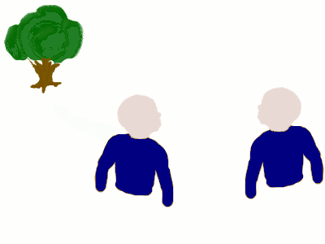
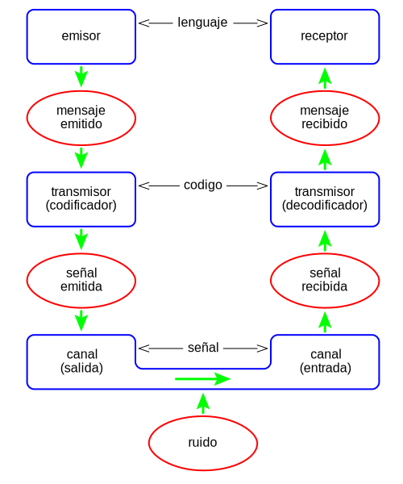

Definición
Entendemos por comunicación el proceso mediante el cual una entidad transmite información a otra.

De RTG - Trabajo propio, Dominio público, https://commons.wikimedia.org/w/index.php?curid=5081575
Elementos que intervienen
- Código: Es un conjunto de signos que se combinan siguiendo unas reglas y que permiten su interpretación, por el cual el emisor elabora el mensaje. El receptor también ha de conocer el código para interpretar el mensaje.
- Canal: El medio físico a través del cual se transmite el mensaje desde el emisor hasta el receptor.
- Emisor: Es la persona que tiene la intención y se encarga de transmitir una información (mensaje), para lo que necesita elaborarla y enviarla al receptor. Esta persona elige y selecciona los signos que le convienen, es decir, realiza un proceso de codificación; codifica el mensaje.
- Receptor: La persona a quien va dirigido el mensaje y quien recibe el mensaje y lo interpreta. Realiza un proceso inverso al del emisor, ya que descifra e interpreta los signos elegidos por el emisor, es decir, descodifica el mensaje.
- Mensaje: En el sentido más general, es el objeto de la comunicación.
Si analizamos la comunicación desde una perspectiva mecánica aparecen:
- Fuente o Emisor: Dispositivo que genera los datos a transmitir, por ejemplo teléfonos o computadores personales
- Transmisor: Transforma y codifica la información, generando señales electromagnéticas que pueden ser enviadas a través de algún sistema de transmisión. Por ejemplo, una antena.
- Sistema de transmisión: Puede ser desde una sencilla línea de transmisión hasta una compleja red que conecte a la fuente con el destino.
- Receptor: Es la persona que recibe, acepta e interpreta la señal (mensaje) proveniente del emisor, y la transforma de tal manera que pueda ser manejada por el destino. Por ejemplo, una radio o un televisor.
- Destino o destinatario: Toma los datos del receptor,

De Dnu72 - Trabajo propio, CC BY-SA 4.0, https://commons.wikimedia.org/w/index.php?curid=78535976
En una comunicación puede aparecer ruido. En comunicación, se denomina 'ruido a toda señal no deseada que se mezcla con la señal útil que se quiere transmitir.
Para que una comunicación pueda llevarse a caso es necesario que en ambos extremos se hable el mismo idioma y se haga bajo unas determinadas reglas que permitan a emisor y receptor entender el mensaje. Este conjunto de reglas recibe el nombre de protocolo de comunicaciones.
En informática y telecomunicación, un protocolo de comunicaciones es un sistema de reglas que permiten que dos o más entidades de un sistema de comunicación se comuniquen entre ellas para transmitir información por medio de cualquier tipo de variación de una magnitud física. Se trata de las reglas o el estándar que define la sintaxis, semántica y sincronización de la comunicación, así como también los posibles métodos de recuperación de errores. Los protocolos pueden ser implementados por hardware, por software, o por una combinación de ambos.1 También se define como un conjunto de normas que permite la comunicación entre ordenadores, estableciendo la forma de identificación de estos en la red, la forma de transmisión de los datos y la forma en que la información debe procesarse.
https://es.wikipedia.org/wiki/Protocolo_de_comunicaciones